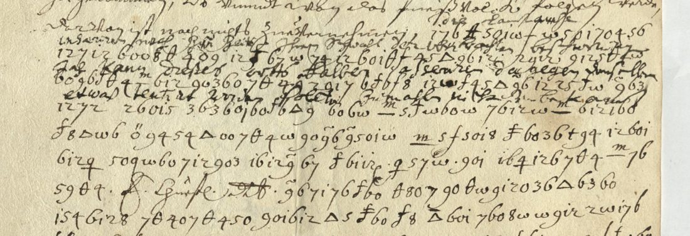

01 The document and the key
One page. The letter has lost its date and signature, and DECODE gives only the volume’s span, 1635–1652. The cipher starts in the middle of a sentence (“noch nicht zu vernehmen,”) and runs until a clear closing that points to a “beygefügter Extract”. Words are separated by spaces.
The system is a letter substitution with a few homophones, written mostly in digits:
| sign | letter | sign | letter | sign | letter |
|---|---|---|---|---|---|
| 5, A, 8 | a (8 also o) | 6 | e | 0 | n |
| 1 | d | 12 (written together) | r | 2, d-shaped sign | s |
| 3 | g | 4 | h | 7 | i |
| 9 | u | w-sign | t | θ | c (θ4 = ch) |
| triangle | l | 4 with cross stroke | m | crossed t | b |
| superscript w | w | j | d |
02 The decipherment
Normalised. Square brackets mark conjecture; … marks the lines not deciphered.
… noch nicht zu vernehmen, die landts[…] …, wir dennoch nur seit ihr endes halber … ursach; das kann dieses orths halber observiren, dagegen den selben etwas tentiret werden solte, zumahl nicht unbewandt […] gebührend zur manutenirung dero Kays. Maj. und des Reichs wie auch [bey diesen …] ungelegen; dahero ich nicht unterlassen sollen, die notturft dieser Vestung so wol allerhöchst ihrer Kays. Maiestet als auch ihrer Churf. Durchl. in Bayern ohnlängst nochmals allerunderthenigst und underthenigst anzudeuten, damit ich aus allen fall entschuldigt sein und dessen, meinem gebührenden bericht an gehörigen ort, nicht ermangeln möchte.
In English: this can be watched from here, and something should be attempted against them, especially since … the maintenance of His Imperial Majesty and the Empire …; I therefore could not fail, lately and once more, to set out the needs of this fortress most humbly to His Imperial Majesty and humbly to His Electoral Highness of Bavaria, so that I may be excused in any event, and not fall short of my duty to report to the proper place.
03 Method
Simulated annealing without word spaces gave only frequency noise. After a second transcription that kept the word gaps and treated the joined “12” as one symbol, a homophonic solver scored with the de-1500s model produced recognisable words, and those words fixed the key. The gloss over lines 1–4 then settled the superscript symbol (w) and 8 (o). The gloss does not follow the cipher line by line; its phrases occur in cipher lines 3–5, in order. All 126 records of the volume (R4452–R4577) were downloaded to look for the key or a clear copy; none was found.
04 What remains uncertain
- The last nine symbols of cipher line 1, cramped under the faded gloss: not deciphered. Line 2 is deciphered after restoring an initial symbol dropped in transcription on two words (graded C).
- Single symbols in line 7 (“[bey diesen]”): conjectural, graded M.
- No longer uncertain (corrected 30 September 2026). Line 9: the symbols at its start had been taken as blotted and the phrase supplied as “dieser [sachen]”. They are clear on the scan and give “ser ue st ung” with the key unchanged, so the phrase is “die notturft dieser Vestung”, the needs of this fortress (9 is u, which also stands for v). Line 11: the symbols before “underthenigst” give “s a l er”, and the triangle carries a doubling bar (ll), so the text is “nochmals allerunderthenigst und underthenigst”, the usual pair for the Emperor and an Elector; no word is supplied.
- Writer, recipient and date are unknown. The deferential tone toward the Emperor and Bavaria makes him an officer or agent reporting to Kassel from the imperial side; “dieser Vestung” places him in a fortress.
05 Sources
- Hessisches Staatsarchiv Marburg, HStAM 4 d Nr. 1218 (Arcinsys).
- DECODE R4500; the volume’s key sheets are R4455–R4577.
Transcription, key and scripts: targets/marburg1635/.